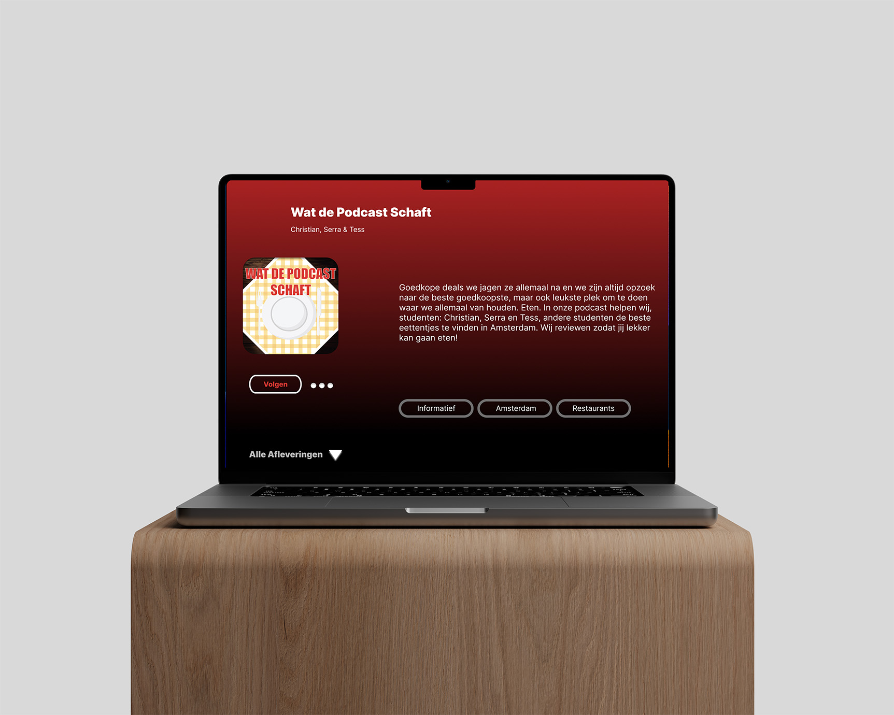
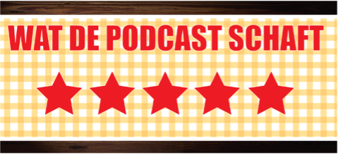

Content
Wat De Podcast Schaft
Groepsopdracht – 3 personen
Periode van het vak: 5 weken
De doelgroep
Nederlandstalige studenten tussen de 17 en 30 jaar die in Amsterdam graag lekker uiteten willen voor niet al te veel geld.
Content
Antwoord geven op de vraag: Wat zijn leuke prijsvriendelijke eet plekken om te eten voor studenten? Doormiddel van een informerende maar entertainende review podcast.
Proces
Om te beginnen zijn wij gaan brainstormen over een onderwerp voor ons podcastkanaal. Zo zijn wij gekomen op: eten in Amsterdam. Daarna zijn wij online opzoek gegaan naar andere podcasts met ongeveer hetzelfde onderwerp. Bij deze podcasts moesten wij de ‘Best and Bad Practices’ omschrijven. Zo konden wij leren wat we wel en niet moesten doen. Met deze informatie konden wij de context beschrijven – wat gaan wij doen? Waarom? Wat is het type podcast? Voor wie? Wat is de conversatie? Daarna hebben we twee Persona’s gemaakt, de Tone of Voice bedacht en gebrainstormd over een introductie. Vervolgens zijn wij gaan nadenken over alle afleveringen die onze podcast zou bevatten, een logo gemaakt en een slogan bedacht. In Figma hebben ik de schermen gemaakt (voor desktop) van de podcast.
Toen zijn wij zelf naar drie plekken gegaan voor onze podcast en hebben deze bestudeert en foto’s gemaakt voor onze promotie. Uiteindelijk zijn wij de podcast gaan opnemen en hebben we een storyboard en promotie gemaakt. De promotie bestond uit een Instagram account en een keurstikker dat op de deur van de plekken worden geplakt als wij daar zijn geweest voor een goede review.
Reflectie
Bij dit vak heb ik geleerd om veel feedback te vragen en om echt in de schoenen te staan van de gebruiker.